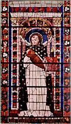
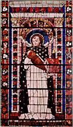

|  |
|---|
Textum a L. J. Bataillon 1983 editum in
"Revue des Sciences Philosophiques et Théologiques"
recognovit Enrique Alarcón et instruxit

|  |
|---|

[92062] Homo quidam fecit, pars 1 Homo quidam fecit cenam magnam et uocauit multos. Luce XIIII.
Videtur distare inter delicias corporales et spirituales quia delicie corporales hominibus sensui deditis sunt manifeste et spirituales delicie sunt eis occulte, spiritualibus autem uiris sunt manifeste. Vnde in Apoc.: vincenti dabo manna absconditum. Et quia de spirituali refeccione nobis sermo est, rogemus huius dulcedinis largitorem ut det michi aliquid dicere ad laudem, et cetera.
[92063] Homo quidam fecit, pars 2 Homo quidam fecit cenam, etc.
Sicut corpus non potest sustentari sine corporali refeccione, ita eciam anima indiget spirituali refeccione ad eius sustentacionem. De ista spirituali refeccione dicit Ps.: super aquam refeccionis educauit me, et cetera. Signanter dicit super aquas refeccionis quia sicut refeccio corporalis necessaria est contra deperdicionem factam ex consumpcione caloris naturalis, ita anima indiget refeccione spirituali propter calorem noxium concupiscencie qui impedit salutem animarum nostrarum, et est necessaria aqua spiritualis que extingat calorem istum. Aqua corporalis refrigerat sed non nutrit, sed aqua spiritualis refrigerat et nutrit. De hac aqua dicitur in Io.: qui bibit ex hac aqua, fiet in eo fons aque salientis in uitam eternam.
De ista refeccione spirituali proponit dominus similitudinem in euuangelio hodierno, et possumus duo uidere, primo preparacionem huius refeccionis, ibi homo quidam fecit cenam magnam, secundo preparati conuiuii communicacionem, ibi et uocauit multos.
Circa primum tria consideranda occurrunt, primo quis est iste homo qui cenam fecit, secundo que est ista cena, et tercio quomodo est magna.
Primo dico: uidendum quis est iste homo. Dico quod iste homo est filius Dei qui uere est homo per ueritatem nature assumpte, unde apostolus ad Phil.: qui cum in forma Dei esset exinaniuit semet ipsum formam serui accipiens in similitudine hominis factus et habitu inuentus ut homo. Iere.: homo est et quis cognoscet eum.
Dicit homo quidam, quasi dicat: quedam specialia insunt ei que non insunt aliis, propter quod est homo distinctus, quia habet plenitudinem deitatis, plenitudinem ueritatis et plenitudinem gracie. Primo dico: Christus habuit plenitudinem deitatis. Alii homines dicuntur dei sed participatiue, sed iste uerus Deus. Item alii homines parum de ueritate cognoscunt, sed homo plenissimam habuit cognicionem, non solum secundum diuinitatem, sed secundum humanitatem: in ipso enim sunt omnes thesauri sapiencie et sciencie absconditi. Item alii habuerunt aliquid gracie, alii graciam eloquencie, alii graciam sapiencie quia diuisiones graciarum sunt, sed Christus habuit plenitudinem gracie, unde apostolus ad Col.: in ipso placuit omnem plenitudinem habitare. De plenitudine diuinitatis, ueritatis et gracie que fuit in Christo dicitur in Io.: vidimus gloriam eius, gloriam quasi unigeniti a patre, quantum ad plenitudinem diuinitatis, plenum gracie, quantum ad plenitudinem gracie, et ueritatis, quantum ad plenitudinem ueritatis que fuit in Christo. Patet modo quis est ille homo.
Secundo uidendum est que sit cena quam fecit iste homo. Dico quod triplicem fecit refeccionem spiritualem, unam que pertinet ad sacramentum, aliam que pertinet ad intellectum, et terciam que pertinet ad affectum.
Primo dico: homo ille fecit cenam que pertinet ad sacramentum. De ista sacramentali refeccione intelligitur quod dicitur in ecclesiastico: transi hospes et orna mensam et que in manu habes ciba ceteros. Christus est hospes in mundo: licet mundus ab ipso factus sit, tamen eum non cognouit; uenit in mundum quasi extraneus. Ornauit mensam sacramentalem et que in manu habuit, id est secundum potestatem a patre ei traditam, cibauit ceteros, id est fideles. Istam refeccionem instituit Christus in quantum habuit plenitudinem gracie. In ista refeccione et est prandium et est cena. Prandium est refeccio sacramentalis in ueteri testamento, cena in nouo testamento.
De prandio sacramentalis refeccionis in ueteri testamento intelligitur quod dicitur in euuangelio: ecce prandium meum paratum est, tauri et altilia occisi sunt. In ueteri enim testamento, tauri occisi offerebantur ad litteram. Prandium fit in prima parte diei; similiter conuiuium sacramentalis refeccionis in ueteri testamento fiebat in prima lege quando tauri et altilia occidebantur et domino offerebantur.
Ex quo prandium factum fuit, decens fuit ut eciam cena fieret, de qua in Mt.: cenantibus discipulis, dominus accepit panem et fregit et dedit discipulis suis et dixit: comedite et bibite: hoc est corpus meum. Ad prandium bene inuitantur extranei sed ad cenam ueniunt solum familiares et domestici. Iob: si non dixerunt uiri tabernaculi mei: quis det de carnibus eius ut saturemur, quasi dicat: familiares admittuntur solum.
Videte quod cena ista fuit magna et quomodo magna. Dico quod cena dicitur magna propter magnificum apparatum, propter magnitudinem delectacionis in gustu, propter magnitudinem uirtutis in effectu. Ista fuerunt in ista refeccione, ergo fuit magna.
Si queras quis fuit eius apparatus, inuenies magnificum apparatum. Ps.: panem de celo paratum dedit eis, panem angelorum manducauit homo. Qui uult bene laudare cibum laudat eum dupliciter, ex loco in quo crescit et ex dignitate utencium. Ex loco quando dicitur: hoc uinum creuit in tali loco, scilicet in quo preciosa uina crescere consueuerunt. Item ex dignitate utencium laudatur uinum quando dicitur: hoc est uinum de quo rex bibit. Propter hoc psalmista uolens describere apparatum cene magnum, primo describit eum ex loco, dicens: panem de celo dedit eis. Vbi creuit? In celo. Crede pani dicenti: ego, inquit, sum panis uiuus qui de celo descendi, scilicet secundum diuinitatem nostram infirmitatem assumendo, celi altitudinem non deserendo. Item describitur cibus ille esse preciosus ex dignitate utencium, quia maximi eo reficiuntur, scilicet Angeli qui uerbo Dei reficiuntur. Cibus iste proponitur tibi in cena. Est igitur cena magna propter magnificum apparatum.
Sed si apponerentur tibi cibaria preciosa et non essent suauia ad sumendum, non reputarentur magna. Propter hoc ista cena describitur secundo esse magna propter magnitudinem delectacionis in gustu, unde in libro sapiencie: panem de celo paratum prestitisti eis habentem in se omne delectamentum et omnem saporis suauitatem. Delectacio causatur ex tribus, ex memoria preteritorum, ex spe futurorum et ex sensu presencium. Omnis autem delectacio est in ista cena. Si consideres preterita, quod memoratur delectabile est. Quid delectabilius est quam recordare quod homo est redemptus sanguine Christi? Lev.: recordare paupertatis mee, et cetera. Et in euuangelio: hoc facite in meam commemoracionem. Et apostolus: quocienscumque feceritis, mortem domini annunciabitis. Item in cena ista est magna delectacio ex spe futurorum, quia refeccio ista sacramentalis signum pronosticum est et dat nobis spem future beatitudinis, unde in euuangelio: nisi manducaueritis carnem filii hominis, et cetera. Item in ista refeccione est maxima delectacio si uertas te ad id quod est presens, scilicet res signata et contenta et res signata et non contenta. Res signata et contenta est corpus Christi et uere debet homo gloriari habere intra se corpus Christi, unde: non est aliqua nacio tam grandis que habeat deos ita appropinquantes sicut Deus appropinquat nobis. Ita delectabilis est res presens significata et non contenta, scilicet unitas ecclesie. Quid est iocundius ista unitate? Ps.: ecce quam bonum et quam iocundum, et cetera. Habet igitur ista cena maximam delectacionem siue uertas te ad preterita, siue ad presencia, siue ad futura.
Tercio, ista cena est magna propter magnitudinem uirtutis in effectu, quia unit nos Deo et facit nos habitare in Deo, unde in Io.: qui manducat meam carnem et bibit meum sanguinem etc., in me manet, scilicet fide et caritate, et ego in eo, scilicet per graciam et sacramentum. Sed Deus est in nobis et nos in ipso, nullum oportet nos timere. Iob: pone me iuxta te et cuiusuis manus pugnet contra me. Ps.: parasti in conspectu meo mensam. Item illud quod unitur ex duobus: illud quod ignobilius est sequitur motum predominantis. Necesse est igitur quod anima Deo unita sequetur Deum. Nullum igitur oportet timere eo quod Deus est in nobis per sacramentum. In fortitudine istius cibi ambulauit Helyas usque ad montem Dei Oreb. Si digne sumimus cibum istum, traducet nos ad uitam eternam. Beati igitur qui digne gustant istum cibum, sed infelices qui indigne gustant quia iudicium sibi manducant. Hec igitur est refeccio sacramentalis.
Alia est refeccio intellectualis pertinens ad intellectum quam Christus preparauit nobis in quantum est plenus ueritate, unde dicit sapiencia increata in prouerbiis: sapiencia miscuit uinum, parauit mensam, inuitauit, dicens: venite et comedite panem meum et bibite uinum quod miscui uobis, et cetera. Sapiencia Dei est Christus, miscuit uinum, scilicet dogma sapiencie spiritualis. Illud uinum fuit ita forte quod homo non posset sustinere nisi esset mixtum, et ideo ipsum temperauit quando spiritualia dogmata proposuit. Posuit mensam, id est uniuersam creaturam. Dogma sapiencie dicitur panis et uinum, panis qui sustentat, uinum quod letificat et inflammat.
In ista refeccione inuenitur prandium et cena. Prandium consistit in doctrina philosophorum, quod significatum est in Abacuc, ubi dicitur quod messoribus ferebat cibum in agrum. Messores sunt philosophi qui colligunt segetes ex agro, id est ueritates ex creatura, unde Ro. I: inuisibilia Dei, etc.
Cena est refeccio sacre scripture, unde in Apocal.: si quis aperuerit michi, intrabo ad eum et cenabo cum illo. Hec est differencia inter doctrinam sacre scripture et philosophie quod doctrina philosophie est ex creatura, sed doctrina sacre scripture est ex inspiracione, unde dicit: si quis aperuerit michi, intrabo ad eum, scilicet per inspiracionem spiritus sancti. Vnde in Io.: cum uenerit ille spiritus ueritatis, docebit uos omnem ueritatem. Sacra scriptura dicitur cena quia domesticis et familiaribus datur, unde dicitur in prouerbiis de muliere: dedit predam domesticis et cibaria ancillis suis. Cena ista est magna quia habet triplicem condicionem predictam.
Primo est magna propter magnitudinem magnificencie in apparatu, quia de maximis est. Vnde dicit sapiencia: audite me, quia de magnis locutura sum. Sunt magna quia omnem sensum excedencia. Vnde in ecclesiastico: plurima super sensum hominis monstrata sunt tibi. Ista sunt utilia, unde dominus in exodo: ego dominus docens te utilia, gubernans te in uia in qua ambulas. Alie sciencie non gubernant te in uia.
Item est cena ista magna propter magnitudinem delectacionis in gustu. In uerbis enim sacre scripture maxime est dulcedo. Ps.: quam dulcia faucibus meis eloquia tua, et cetera. Dulcedo eius est super dulcedinem omnis alterius sciencie. Aliqua enim consideracio dicitur delectabilis dupliciter, aut propter rem consideratam, aut propter ipsam consideracionem. Demonstracio de triangulo non est delectabilis propter rem demonstratam, quia non curat quis multum de triangulo, sed est delectabilis propter ipsam consideracionem que competit intellectui. Sed quando consideracio est de re amata, et cum hoc ipsa consideracio est delectabilis, tunc est perfecte delectabilis; sic est in sacra scriptura: non solum est ibi delectacio de cognicione ueritatis, immo est eciam de rebus amatis. Vnde Augustinus libro confessionum dicit: non habent alie littere uultum pietatis huius, lacrimas confessionis, arram spiritus sancti, et alia que ponit ibi. Est igitur refeccio sacre scripture magna propter magnitudinem copie in apparatu et propter magnitudinem delectacionis in gustu.
Tercio propter magnitudinem in effectu. Quis est ille eius effectus? Dico quod dat uitam, unde beatus Petrus: domine ad quem ibimus? Verba uite eterne habes. Per uerba inducuntur homines ad fidem per quam uiuunt et ad caritatem inflammantur. Vnde in ecclesiastico: cibauit illum pane uite et intellectus, etc.
Tercio preparauit nobis Christus refeccionem pertinentem ad affectum, unde in cantico: comedite amici mei, scilicet hic per graciam, et inebriamini karissimi, scilicet in futuro per gloriam. Istam refeccionem facit nobis Christus in quantum habet plenitudinem diuinitatis. Ps.: graciam et gloriam dabit dominus.
In ista refeccione est prandium gracie, scilicet in presenti. Ad istud prandium uocat dominus in Io. dicens: venite et prandete. Cenam huius refeccionis expectamus in futuro, que erit in gloria. Vnde in Apoc.: beati qui ad cenam nupciarum agni uocati sunt. Hec est cena ad quam nullus uocatur, nisi dignus familiaris et domesticus, unde in Ysa.: serui mei comedent et uos esurietis.
Cena ista est magna super alias propter triplicem condicionem predictam. Propter magnitudinem magnificencie in apparatu. Magnitudo apparatus est in hoc quod homo sedeat ad mensam Dei. Qui sedet ad mensam regis habet magnificum apparatum, et in Luca dicitur: ego disposui uobis, etc., ut edatis et bibatis super mensam meam, et cetera. Numquid habet mensam corporalem? Certe non, sed refeccio Dei est gaudium. Sed de quo gaudet Christus? Certe de se ipso, et nisi de se ipso gauderet, beatus non esset. Et tunc faciet se ipsum uidere per essenciam, et sic in ipso gaudebunt. Iob: tunc super omnipotentem deliciis affluens. Quis est preciosior cibus quam Deus? Certe nullus.
Si queras de magnitudine delectationis in gustu, superfluum est querere. Quicquid enim est delectabile, ideo est delectabile in quantum est bonum uel in quantum habet speciem boni. Sed si parua bona uel que habent participacionem boni sunt delectabilia, quantam ergo delectacionem facit illud cuius bonitas est infinita. Ps.: delectationes in dextera tua usque in finem. Item Ps.: quam magna multitudo dulcedinis tue, domine.
Tercio est cena ista magna propter magnitudinem uirtutis in affectu, quia habet perpetuitatem uite. Nunquam enim deficient in ea sancti gaudentes. Ps.: edent pauperes et saturabuntur, et cetera. Edent pauperes, et qui pauperes? Certe pauperes spiritu, unde Mathei V: beati pauperes spiritu, et cetera. Vel pauperes, id est humiles, siue uoluntate pauperes, scilicet qui habent diuicias et contempnunt eas. Isti perueniunt ad cenam, sed qui habent animum implicatum temporalibus non perueniunt. Vnde in euuangelio: beati qui esuriunt et siciunt iusticiam, quoniam ipsi saturabuntur. Et: laudabunt dominum qui requirunt eum. Augustinus: videbimus, amabimus et laudabimus. Viuent corda eorum in seculum seculi, non solum uita corporali, sed uita anime Deo coniuncta. Quod nobis prestare dignetur ille qui cum patre, et cetera.
[92064] Homo quidam fecit, pars 3 Homo quidam, etc.
Dictum est hodie de preparacione huius cene, nunc dicendum est de eius communicacione. Non enim preparauit homo quidam cenam ut esset uacua, sed ut eam aliis communicaret. Videte quod nulli ista cena communicatur nisi qui ad eam uocatur. Ad ea que homo noscit et desiderat ire potest non uocatus, sed ad illud quod superat nostrum desiderium ire non potest nisi uocatus. Talis est hec cena, unde apostolus Cor. II, et Ysa. LXIII: oculus non uidit, nec auris audiuit, nec in cor hominis, et cetera. Et ideo ad cenam istam non uenit quis nisi uocatus, unde ad Ro. VIII: quos uocauit, hos et iustificauit, etc.
Notandum quod est duplex uocacio, una interior, alia exterior. Vocacio interior qua dominus hominem alloquitur interius, et ista nunquam uadit in cassum, quia homo non renuit. Iob XIIII: vocabis me et ego respondebo tibi. Augustinus libro de predestinacione dicit: gracia que humanis cordibus diuina largitate infunditur a nullo duro corde repellitur; ad hoc quippe tribuitur ut ipsa duricia cordis primitus repellatur. Ergo non uadit in cassum, unde in Io.: omnis qui audit et discit a patre meo uenit ad me.
Alia est uocacio que est per Angelum uel per hominem, et ista non est efficax sicut illa que est per Deum, immo frequenter est in cassum et multi eam renuunt, undo Prouerb. I: vocaui et renuistis et Mathei XX: multi enim sunt uocati, pauci uero electi. De ista uocacione loquitur hic dominus, dicens: vocauit multos. Et quod de ista loquatur, patet quia ista facta fuit per seruum, unde: hora cene misit seruum suum dicere inuitatis: venite. Sed quis est seruus? Apostolus Paulus et alii predicatores, prelati et doctores; omnes tales qui admonent ad bonum dicuntur serui Dei.
Duo hic consideranda occurrunt, scilicet qui uocantur et quomodo uocantur.
In ista multitudine uocatorum triplex distinccio reperitur, sicut in euuangelio patet: quidam uocatorum ad cenam fuerunt inuitati, quidam ciues et abiecti, et quidam extranei.
Sed qui fuerunt inuitati? Dico quod proprie inuitati fuerunt qui priuilegium diuini muneris sortiti sunt. Inuitacio enim fit ad familiares. Si aliquis est religiosus, clericus, aut est sortitus donum sapiencie uel aliquid huiusmodi, istud est inuitacio. In Hester dicitur quod qui inuitati fuerunt ad conuiuium bibebant in poculis aureis. Pocula aurea sunt dona Dei preciosa.
Inuitatos oportet uenire ad nupcias, sed non ueniunt propter triplex impedimentum quod tangitur in canonica Io.: nolite diligere mundum nec ea que in mundo sunt. Si quis diligit mundum non est caritas Dei in eo. Quid est qui impedit inuitatos uenire ad nupcias? Certe quod homo adhereat mundo. Et quomodo adheret quis mundo? Certe sequendo ea que in mundo sunt. Et que sunt in mundo? Aut est concupiscencia carnis, aut concupiscencia oculi, aut superbia uite, ut dicitur in canonica Iohannis. Tripliciter igitur impediuntur homines uenire ad cenam et si sunt inuitati, scilicet propter superbiam, propter oculorum concupiscenciam aut carnis.
Primo dico, impeditur quis uenire ad cenam propter superbiam. Contingit quod aliqui acceperunt a Deo multa bona spiritualia aut temporalia, et cum propter ista deberent Deo subdi, propter ista superbiunt, unde in Eze.: eleuatum est cor tuum in decore tuo; et in Iere.: dices ad optimates eorum, et ecce ipsi fregerunt iugum consiliorum, et ruperunt uincula, scilicet mandatorum. Et isti significantur per illum qui dixit: villam emi et eo uidere eam. Dicit Augustinus quod in uilla dominacio intelligitur, in dominacione superbia exprimitur; et cena est humilium. Et notate quod dicit: villam emi et necesse habeo uidere illam. Frequenter qui superbiunt de donis sibi a Deo datis considerant dona, non auctorem donorum. Dicitur contra quemdam ad Cor.: quid habes quod non accepisti? Considera te esse prelatum uel scientem; debes recogitare unde habes: non habes a te, sed a Deo ut ei subdaris. Et ista cogitacio non solum tollit superbiam sed inducit humilitatem. Cum enim crescunt dona, crescunt raciones honorum; quanto plura bona habes, tanto Deo magis es obligatus. Sed non potest Deo gracias agere qui ignorat se bona a Deo habere. Propter hoc recogita quod a Deo habes quecumque habes et quod ei teneris gracias agere seu reddere, et non inducent superbiam.
Alii ad cenam uenire contempnunt, licet eciam fuerint inuitati, et hoc propter concupiscenciam oculorum, de quibus intelligitur illud Osee: multiplicaui eis argentum et aurum que fecerunt Baal. Per aurum intelligitur sapiencia, per argentum eloquencia; aliqui adepti sunt graciam eloquencie uel donum sapiencie, et unde Deo seruire deberent, dyabolo seruiunt, qui uertunt ea ad cupiditatem et ad acquirendum terrena. Dicit quod fecerunt Baal quia auaricia est ydolorum seruitus. Isti significantur per inuitatum qui dicit: iuga boum emi quinque et uado probare ea. Per quinque iuga signantur quinque sensus qui totaliter inseruiunt rebus sensibilibus. Dicit: iuga boum emi quinque, et cetera. Hic non solum cupiditas sed curiositas reprobatur. Aliqui ualde curiosi sunt de exterioribus et de factis aliorum, quia inquirunt facta aliena et sua negligunt. Isti sunt sicut oculus qui alium uidet et se ipsum non uidet. Nichil enim uolunt aliqui credere nisi quod uident.
Tercio inuitati impediuntur uenire ad cenam propter concupiscenciam carnis. Aliqui enim quando per dona Dei sunt exaltati conuertunt se ad delicias, unde in Eze.: habes fiduciam in decore tuo, fornicata es. Ysa.: in illa die uocabit dominus ad fletum et planctum, quando scilicet dixit in euuangelio: beati qui lugent, et cetera. Et ecce gaudium illorum occidere uitulos, dicunt reprobi, comedamus et bibamus, cras enim moriemur. Isti signantur per illum qui duxit uxorem et ideo ad cenam uenire non potuit. Per uxorem significatur concupiscencia carnis. Solus iste et non alius dixit: non possum uenire: propter illecebras enim carnis non potuit uenire. Differencia est inter peccatum superbie, cupiditatis et luxurie, quia superbi et cupidi ex proposito peccant nec habent uoluntatem ueniendi ad cenam, sed qui peccant peccato carnis peccant ex infirmitate et impotencia. Hii habent propositum eundi ad cenam sed impediuntur concupiscencia carnis, unde apostolus: caro concupiscit aduersus spiritum, spiritus aduersus carnem ut non quecumque uultis faciatis. Isti quamuis fuerunt inuitati non uenerunt ad cenam uel propter superbiam uel propter cupiditatem uel propter carnis concupiscenciam. Sed scriptum est quod seruus sciens uoluntatem domini sui et non faciens plagis uapulabit multis. Quanto igitur maior es, si facis contra uoluntatem, maiori pena dignus es. Et pater familias, quando audiuit quod inuitati noluerint uenire, iratus est; per iram significatur Dei uindicta. Igitur primi qui uocantur ad cenam sunt inuitati.
Aliud genus eorum qui uocantur ad cenam sunt ciues et abiecti, unde dicit in euuangelio: vade in uicis et plateis ciuitatis et uoca debiles, cecos et claudos, et cetera. Et uidete quod nouissimi facti sunt primi. Magni enim non perueniunt ad cenam istam nec potentes sed debiles et pauperes; exemplum habemus in Lazaro et diuite. Infirmi frequenter conuertuntur, unde Ambrosius: nullum debilitas corporis excludit a regno, rariusque deliquit cui peccandi deest illecebra. Apostolus: que infirmi sunt mundi elegit Deus ut fortia queque confundat. Spiritualiter intelligere debetis quod eliguntur pauperes in temporalibus qui tamen diuites in spiritualibus; isti sunt in uicis et plateis, unde propheta: dispersi sunt lapides sanctuarii in capite omnium platearum, sed de diuite in temporalibus, paupere uero in spiritualibus, dicitur in Apoc.: dicis quia diues sum et nullius egeo et nescis quia miser es, etc., quia miseros facit populos peccatum. Sed quarum diuiciarum defectum paciuntur peccatores? Dico quod deficiunt in cognicione, in fortitudine, in rectitudine.
Primo dico: excecati per peccatum paciuntur defectum in cognicione, scilicet quia repudiant bonum et eligunt malum, unde apostolus ad Thi.: tumidi, ceci, uoluptatum magis amatores quam Dei. Ex ista cecitate est quod homines diuina contempnunt et temporalia magis habeant.
Alii propter peccatum deficiunt in fortitudine animi et uirtute, unde in Neem.: debilitata est uirtus portantis, quorum uirtus michi erat pro nichilo; et isti sunt debiles.
Alii per peccatum excecati deficiunt in rectitudine, scilicet intencionis, unde in Michee: periit sanctus de terra et rectus in hominibus non est. Isti sunt claudi: uidentur exterius sequi dominum sed si quis uidet eorum intencionem apparent claudi. De illa claudicacione dicit Helyas: usquequo claudicabitis in duas partes. Quandoque uero pauperes ditantur, ceci illuminantur, debiles confortantur et claudi reparantur. Ysa.: tunc saliet sicut ceruus claudus.
Videte: quando seruus induxerat istos dixit domino: adhuc locus est, in quo notatur predestinacio: non solum enim magni uel fideles uocantur, unde dominus: alias oues habeo que non sunt ex hoc ouile, et cetera. Propter hoc uocat dominus extraneos, unde in euuangelio: exi in uias et sepes et compelle, et cetera. Per extraneos significantur infideles.
Triplex autem distinccio infidelium inuenitur. Primi sunt gentiles et pagani qui non communicant omnino in fide, non lucet eis lux fidei. Isti sunt in uiis tenebrosis, unde: vie impiorum uie tenebrose.
Alii infideles sunt Iudei qui in aliquo communicant nobiscum, scilicet in doctrina sacra ueteris testamenti, de quibus dicitur: adhuc modicum lumen in uobis est. Isti signantur per uias dissipatas. Ysa.: dissipate sunt uie. Transeunt figurales obseruancie; fuerunt uie dissipate quia ueniente ueritate transiuit figura. Peccaret igitur qui figurales obseruancias seruaret, unde apostolus: si circumcidimini, Christus nichil uobis proderit.
Tercii infideles sunt heretici qui sunt in sepibus. Sepes ponuntur ut diuisiones faciant; heretici de nullis seruiunt nisi quod diuisionem faciant; heretici sunt spine quia pungunt et sepes quia diuidunt.
Ista tria genera hominum signantur nobis per hoc quod euuangelium primo predicatum fuit principibus et sacerdotibus qui uenire renuerunt, postea predicauit Petrus plebi Iudeorum et conuertit tria millia ipsorum, postea predicatum est in sepes et plateas et omnes ad fidem adducti sunt; unde non solum orat ecclesia pro prelatis sed pro afflictis et infidelibus. Isti igitur sunt qui uocati.
Sed quomodo uocantur? Triplex modus uocacionis ponitur. Inuitati uocandi sunt simplici denunciacione, unde in euuangelio: misit seruum suum hore cene dicere inuitatis ut uenirent. Meliores non sunt increpandi nec exasperandi, unde dicitur: seniorem ne increpaueris sed honora ut patrem, et alibi: da sapienti honorem.
Item pauperes et abiecti sunt introducendi. Assumpserunt aliqui propositum ueniendi ad Deum in baptismo, abrenunciauerunt dyabolo et omnibus pompis eius; indigent aliquo qui eos instruat et introducat et familiares regi faciat, unde in exodo: ecce mictam angelum meum qui precedet faciem tuam et custodiat te et introducat in locum.
Tercio infideles et heretici sunt compellendi intrare ad cenam, unde in euuangelio: exi in uias et sepes et compelle eos intrare. Dupliciter sunt compellendi qui in sepibus sunt. Signa data sunt non fidelibus sed infidelibus, unde compelluntur heretici intrare ex euidencia miraculorum. Item ad litteram compellendi sunt per uexacionem, unde in Ps.: in chamo et freno maxillas, et cetera. Dicunt heretici quod nulli sunt compellendi per penam uenire ad fidem. Certe immo, unde Ysa.: sola uexacio dabit intellectum auditui.
Non legitur quod se excusauerunt qui fuerant in uicis et sepibus sed solum illi qui fuerunt inuitati, in quo signatur quod frigidi peccatores cicius conuertuntur quam qui decidunt a statu uie, unde in Osee: usquequo non poterit mundari quia ex Israel est. Rogabimus, et cetera.